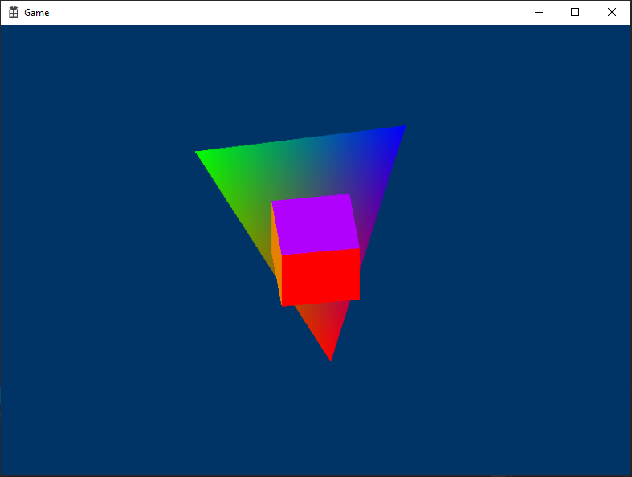
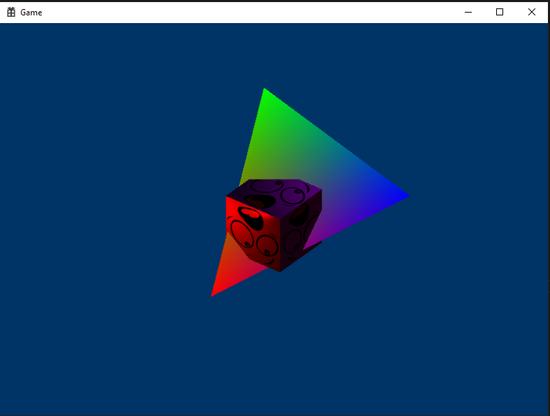
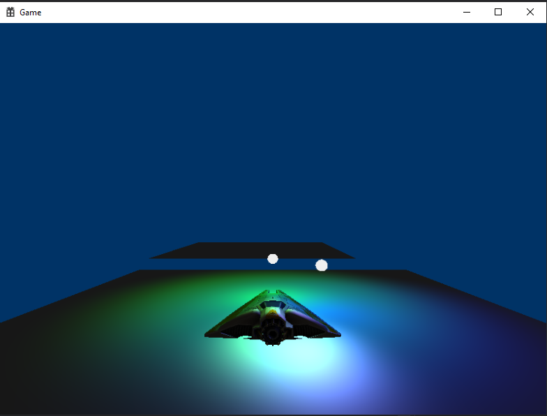
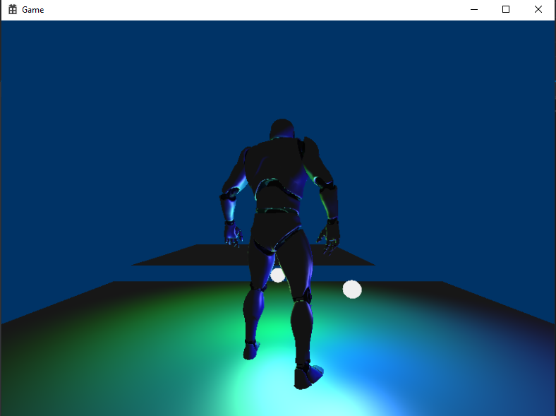
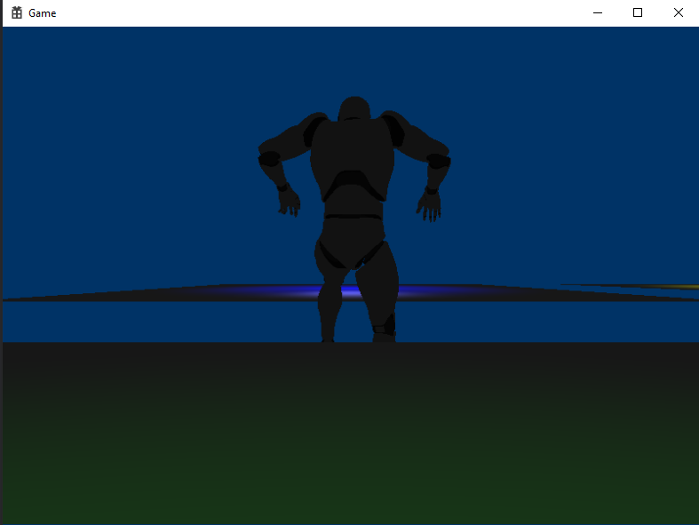
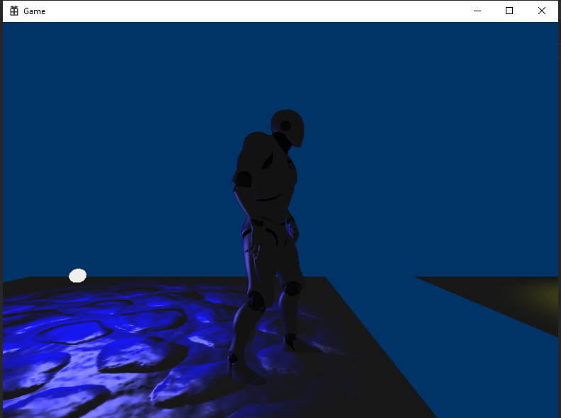
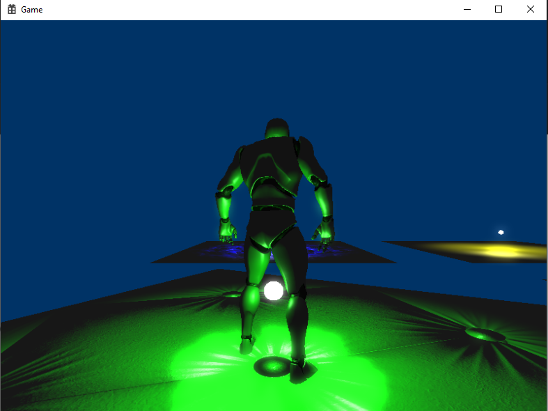

Project Description
Throughout the course of a semester, I assembled a simple game engine in C++ and tested it in Visual Studio.
Working from the bottom, I had to write the physics and math functions that would be used to simulate real-life physics on objects inside the engine and looked through the Windows DirectX documentation in order to properly render shapes onto the screen. From there, later goals were to implement additional features or improve performance, such as the creation of various shaders, multi-threading, and profiling functionality.
A Closer Look
You can find the project solution and code here.
Log
- Engine Math and Physics
- Rendering
- Lighting
- Profiling
- Models and Animation
- Multi-threading
- Collisions
- Normal Map
- Bloom
Engine Math and Physics
The first files I worked on were the engineMath.h and engineMath.cpp files. In it, functions for vector math and matrix operations were implented for later use in the physics files.
The engine physics were implemented in another set of files, Physics.h and Physics.cpp. In it were functions for collision/intersection detection between AABB boundaries as well as between a ray and an AABB boundary.
Rendering
Rendering was implemented via the Direct3D API. The first iteration of the engine involved rendering a rotating 2D triangle to test whether it had been implemented properly. Afterwards, I tested rendering in 3D by rotating a cube.
 Triangle and cube fully rendered.Lighting
Adding lighting was the next step. For this part of the project, I learned how to write shaders for basic diffuse, ambient, and specular lighting.
 Lighting applied to the scene.Profiling
In a separate file, simple profiling functionality was implemented so that the user can check stats such as render times or time spent with the application open. This functionality can be used by calling on the profiler's timer at the start and end of the code section that the user would like to time. The results are then outputted to a formatted file.
Models and Animation
Using pre-acquired mesh data, the scene was now updated to support the rendering of 3D models and to animate them. To do so, all of a scene's data is stored within a JSON file, which is then parsed into its various object components. Every object's data is recorded by an asset manager, a class which keeps track of all related meshes, shaders, textures, and more. This asset manager provides the necessary data to render models created in the game.
 3D model of a futuristic spaceship with point lights in the background.As for animation, animation and skeleton data will be loaded in with the provided scene's JSON. If a model comes with animation data, then it will be loaded and stored in an animation component. This component can then be attached to its character object.
 3D model of a robotic man, idle animation implemented.Multithreading
This was a short modification to some of the existing files, namely those involved in the animation manager, to allow for slightly improved performance via multithreading. Tasks that can be accomplished by multi-threading are assigned by an overarching job manager object.
Collisions
Drawing back on the library of math functions that had been created at the beginning, proper collisions were now implemented into the actual scene. Each object now had a hitbox associated with their model. In this case, the character's position was raycasted against the plane hitboxes of the platforms to detect whether the character was standing on top of them.
 Character falling off of a platform.Normal Map
The normal map feature allowed me to add the appearance of texture onto surface without actually increasing polygon count on the models. This was accomplished by further iterating on the existing shaders to accept normal map inputs and to include that data when calculating the final color of a pixel after lighting and color.
 Normal map functionality implemented to add texture to the platforms. Comparison platform with no normal map to the right.Bloom
The final addition is the inclusion of a bloom filter, which can be applied to add a glossy, blurry glow effect.
 Observable bloom filter on the surface of the platform.